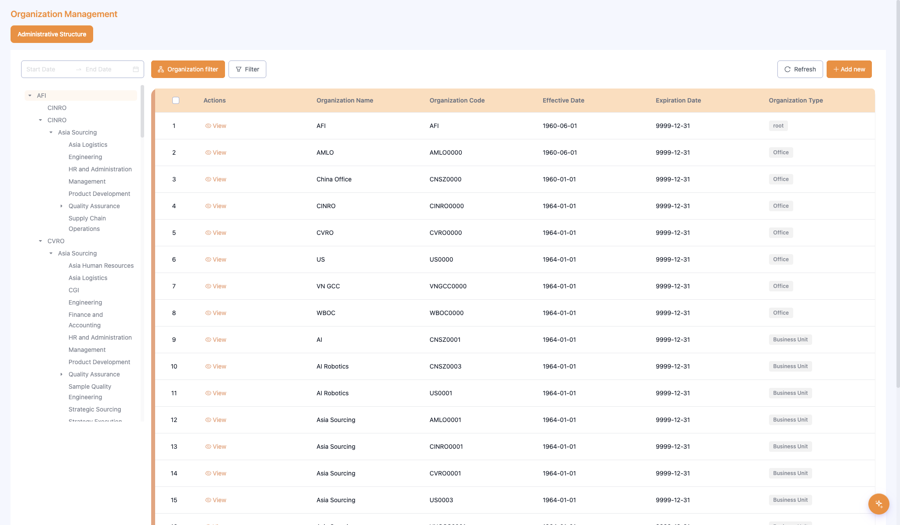
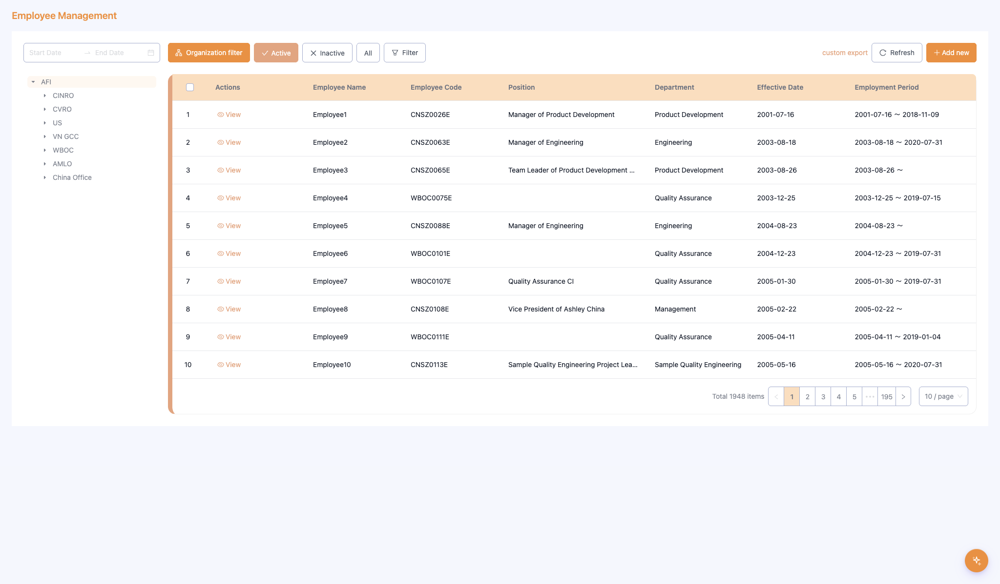
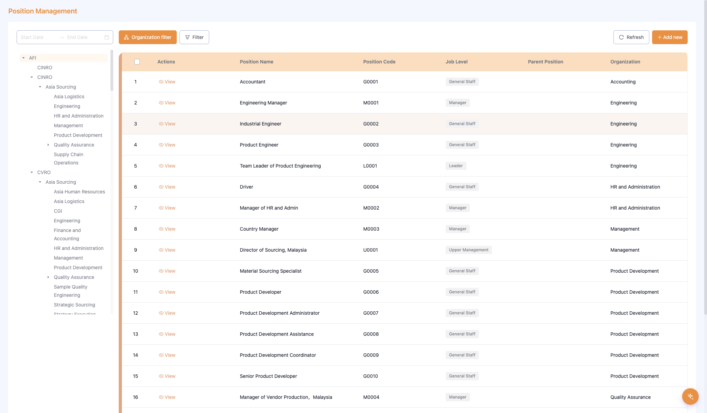
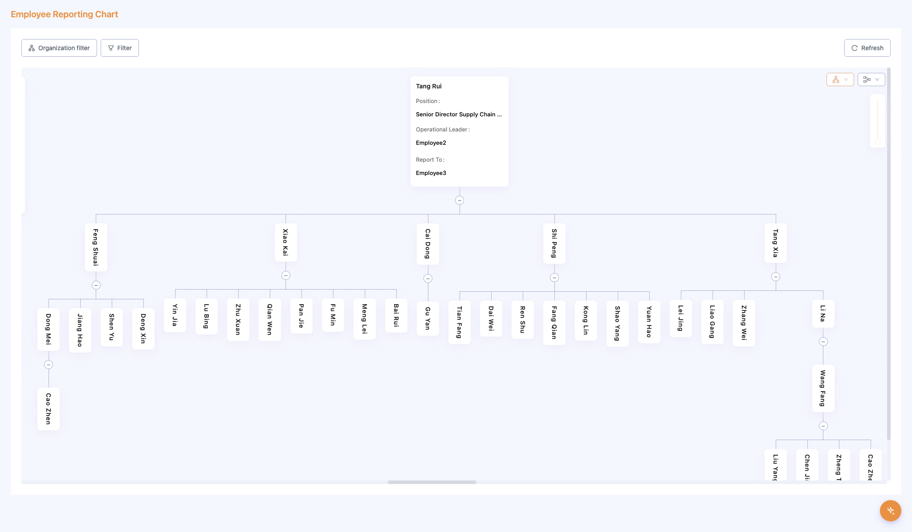

Audience: All Users
Version: V1.0
Q1: What modules does HRS include?
HRS includes 5 core modules:
Module previews:
| Organization Management | Employee Management |
|---|---|
 |  |
| Position Management | Employee Reporting Chart |
|---|---|
 |  |
Q2: Who can use HRS?
Specific permissions are assigned by the system administrator. Contact IT or HR for access requests.
Q3: What is the difference between deactivating and deleting an organization?
Q4: What is a timeline version? Does every change create a new version?
A timeline version records a point-in-time snapshot of an org, employee, or position.
Q5: I updated org information but the page still shows old data. Why?
Try the following:
1. Click the Refresh button at the top right of the list
2. Check whether the date range filter covers the new effective date
3. If the issue persists, contact the system administrator
Q6: How do I view an organization's information at a specific historical date?
1. Go to Organization Management, find the org, and click View
2. On the detail page, look at the timeline
3. Click the node for the date you want — the right panel shows that version's details
Q7: What is the difference between Active and Inactive employees?
Toggle the status tabs at the top of the employee list. Select All to see every employee record regardless of status.
Q8: I cannot find a specific employee. What should I check?
1. Is the status tab set to Active? The employee may be Inactive (departed)
2. Is the org tree on the left filtering to a specific department? That limits results to that unit
3. Is the date range filter covering the employee's tenure period?
Q9: When adding an employee, the system shows "Employee code already exists." What do I do?
The code is already in use. Search for that code in Employee Management to identify the existing record. If it is a system error, contact an HR administrator.
Q10: Can I export the employee list? Which fields are available?
Yes. Click Custom Export at the top right of Employee Management. You can select any combination of fields including: Name, Code, Department, Position, Status, Start Date, Tenure, and more.
Q11: What is the difference between a Position and a Job Title?
Q12: If a position is deactivated, are the employees in it affected?
Deactivating a position does not directly change the status of current employees. However, the position can no longer be assigned to new employees. Ensure employee records are updated before deactivating a position.
Q13: Is the Reporting Chart data synchronized with the other modules?
Yes. The Reporting Chart pulls live data from Organization Management, Employee Management, and Position Management. No manual sync is needed.
Q14: What are Operational Leader and Functional Leader?
This dual reporting structure is common in matrix organizations and is shown on each card in the Reporting Chart.
Q15: How do I export the org chart?
Click Export at the top right of the Reporting Chart page. Select the format (image or PDF) and confirm. If the export button is unavailable, your account may not have export permission — contact your administrator.
Q16: What can the AI Assistant do?
The AI Assistant supports two types of actions:
Q17: Can the AI Assistant make changes to data without my confirmation?
No. Before executing any write action (create, update, deactivate), the AI always shows a confirmation card with the details of the operation. You must explicitly confirm before the action is applied.
Q18: What if the AI Assistant misunderstands my request?
If the AI's response or confirmation card does not match your intent, simply decline the confirmation and rephrase your request with more detail. For example, specify the org unit, date, or field name explicitly. If issues persist, perform the action manually via the standard module interface.
Q19: I don't have permission to add or edit data. How do I request access?
Contact your department manager or an HR administrator to submit a permission request through the xWork access management flow.
Q20: The page won't load or is displaying an error. What should I do?
1. Refresh the page (F5 or Cmd+R)
2. Clear your browser cache and try again
3. Use Chrome or Edge (recommended browsers)
4. If the issue persists, contact IT support
Can't find your answer here? Contact the HRS system administrator or submit a support ticket via xWork.